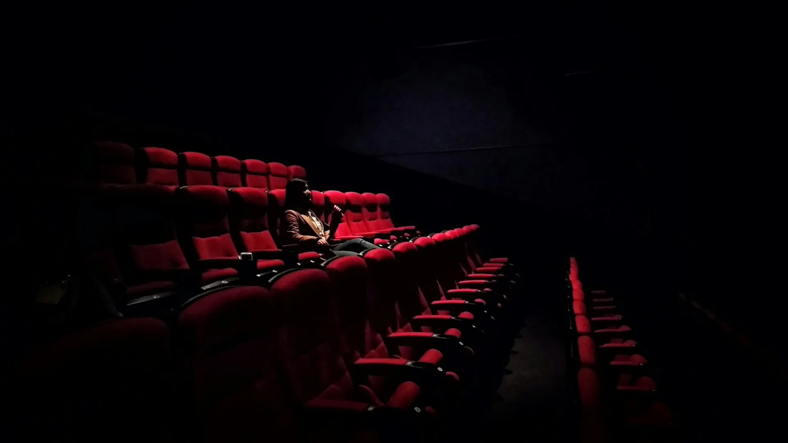
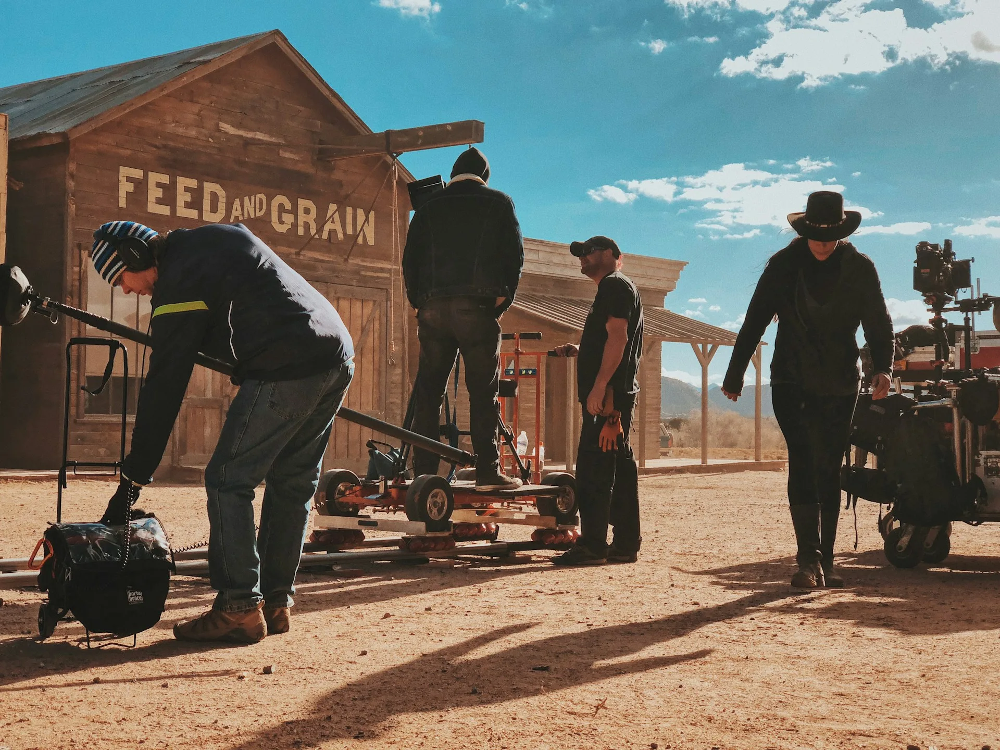
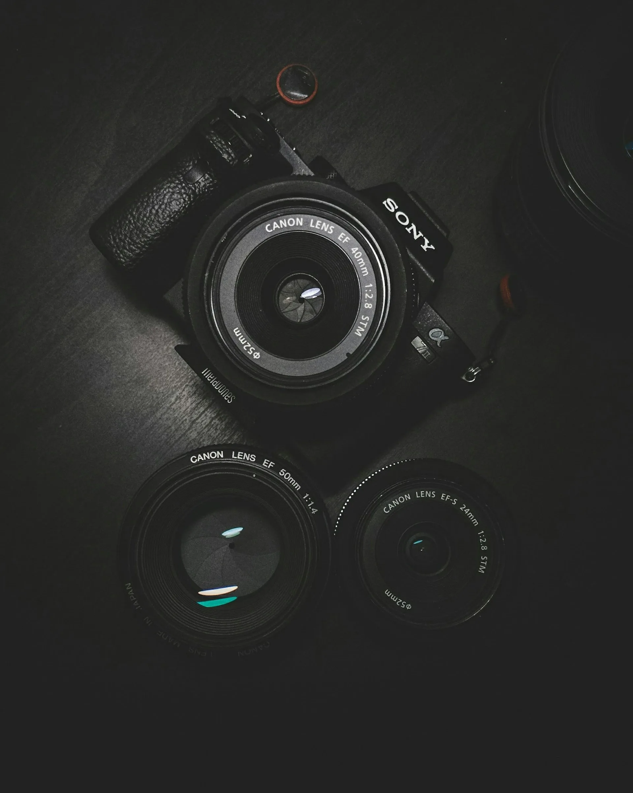

Four phases. Months of preparation. Infinite attention to the invisible details that separate a sequence from a scene, a scene from a film.
A film is won or lost in development. The choices made before a camera is ever unpacked — script analysis, location scouting, visual research, casting — determine ninety percent of what will appear on screen. We spend more time here than anywhere else.

On set, the director's job is to create the conditions in which something true can happen. We maintain a calm, focused environment. We do not rush. We allow time for the unexpected, because the unexpected is frequently where the film lives.

Editing is the second writing of the film. Color grading is its final painting. We work through a minimum of eight assembly cuts with our editor before touching color — because the structure must be right before the texture is set.

A film without an audience is a private dream. We work closely with distributors and festival programmers to ensure each project finds its rightful audience — in cinemas, at festivals, and eventually at home.
Script work, visual research, initial department head meetings, location surveys, casting process begins. First look book assembled.
Full camera, lens, and stock tests. Grade palette established. Lighting diagrams for key scenes completed. Final cast confirmed.
Typically 30–45 shooting days for a feature. Daily rushes reviewed. Editorial begins during production.
Minimum 8 editorial passes. Sound design overlapping with picture edit. Color grade (minimum 10 days). DCP master.
Festival submission strategy. World premiere at target festival. Theatrical release. Streaming window (minimum 12 months post-theatrical).